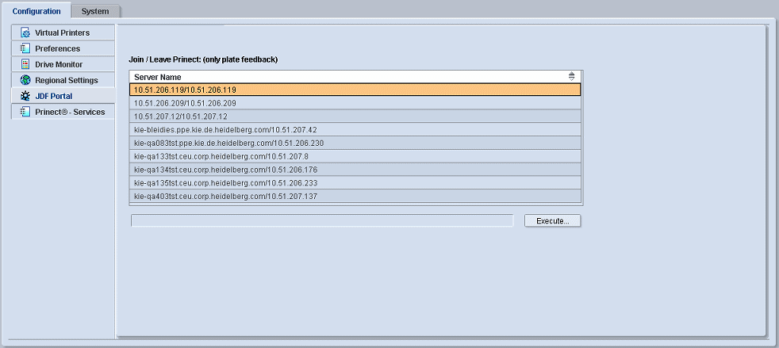

Prinect Shooter может сообщать подробную информацию о восстановленных пластинах или фильмах, таких как название материала, размер материала, тип (пластинка / пленка) и время визуализации в MIS или в точку анализа Гейдельберга через портал JDF. Он также сообщает детали типа (алюминий/полиэстер) для пластин.
Подробности о повторном отображении, отправленные через портал JDF, содержат контекст работы оригинальной печатной работы. Другими словами, если задания были созданы в сочетании с системой рабочего процесса Prinect, например, с менеджером интеграции Prinect, в MIS или Analyze Point также отправляются такие данные, как идентификатор задания, JobPartID, логин, имя подписи, имя листа, сторона, разделение или языковая версия. Исходя из этих деталей, переделанные пластины или пленки могут быть четко отнесены к исходной работе.
 Примечание: JDF является XML-формат данных, объединяющий спецификации билетов на работу со стандартом описания сообщений и протоколом обмена сообщениями. JDF является дальнейшим развитием известных технологий, таких как CIP3. PPF и The Adobe Portable Job Ticket Format (PJTF).
Примечание: JDF является XML-формат данных, объединяющий спецификации билетов на работу со стандартом описания сообщений и протоколом обмена сообщениями. JDF является дальнейшим развитием известных технологий, таких как CIP3. PPF и The Adobe Portable Job Ticket Format (PJTF).
Для подключения Prinect Shooter к среде системы Prinect через портал JDF необходимо зарегистрироваться в менеджере интеграции Prinect. Для этого в группе «Сервер» выберите сервер Prinect Integration Manager, на котором вы хотите зарегистрировать Prinect Shooter. Если в вашей системной среде есть несколько серверов Prinect Integration Manager, перечислены все серверы Prinect Integration Manager, расположенные в сетевой среде. Вы можете снова запустить запрос сервера с помощью «Обновить», если вы не можете найти определенный сервер в списке.
Для подключения Prinect Shooter к среде системы Prinect через портал JDF необходимо зарегистрироваться в менеджере интеграции Prinect. Для этого в группе «Сервер» выберите сервер Prinect Integration Manager, на котором вы хотите зарегистрировать Prinect Shooter. Если в вашей системной среде есть несколько серверов Prinect Integration Manager, перечислены все серверы Prinect Integration Manager, расположенные в сетевой среде. Вы можете снова запустить запрос сервера с помощью «Обновить», если вы не можете найти определенный сервер в списке. Выберите сервер, на который вы хотите войти, и нажмите «Исполнить». Программа «Join Prinect» открывается через сетевое соединение с выбранным сервером. Сначала отображается оповещение о безопасности Windows. Этот диалог обращает ваше внимание на то, что брандмауэр Windows заблокировал «Join Prinect». Windows предполагает, что это может быть вредоносное ПО, например, троянец, и хотела бы заблокировать связь с «Join Prinect» с помощью брандмауэра Windows. Нажмите «Разблокировать». Prinect Shooter подключается к менеджеру интеграции Prinect с «Join Prinect». Вы найдете подробную информацию о подключении к менеджеру интеграции Prinect. Подключение стрелка Prinect к среде системы Prinect.

Copyright © 2013 Heidelberger Druckmaschinen AG